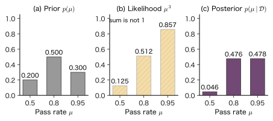
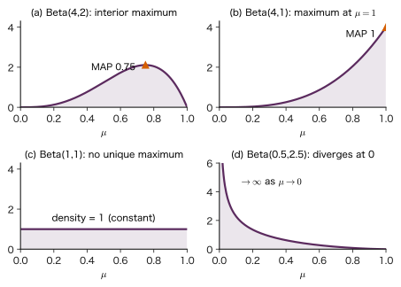
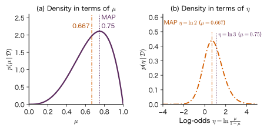
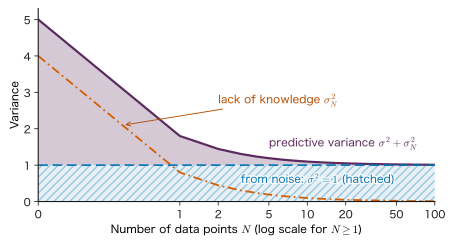
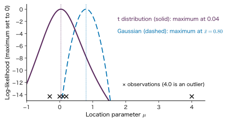

Chapter 4Maximum Likelihood, MAP, and Bayesian Estimation — Learning a Distribution from Data
- We baked three sintered bodies under new conditions, and all three passed. Can we say that the pass rate under these conditions is 100%?
- How can we attach “how reliable it is” to an estimate? How does the way we answer change between 3 data points and 300?
- When a value from the literature (prior knowledge) and our own measurement disagree slightly, how should we combine them?
If we look only at the result that all 3 of the 3 sintered bodies passed, the estimate of the pass rate is $3/3=1$, that is, 100%. Yet no one would start mass production under these conditions and believe that “defectives will never appear.” Even if the pass rate were 0.8, the probability of three consecutive passes is $0.8^{3}\approx0.51$. The three data points say that “the pass rate seems high,” but they do not go as far as saying “it is 1.” Expressing in numbers “how far we can go” is the goal of this chapter.
In Chapter 2 we called the same expression $p(\data\mid\theta)$, viewed as a function of the parameter $\theta$, the likelihood, and we used Bayes's theorem to work backward to the “probability of a cause.” In this chapter we combine these two ideas and build, one after another, three methods for estimating a parameter from data: maximum likelihood estimation (MLE), which maximizes the likelihood (Section 4.2); MAP estimation, which takes the maximum point of the posterior distribution obtained by multiplying by a prior distribution; and Bayesian inference, which takes the posterior distribution itself as the answer (Sections 4.3–4.5). If we use a beta distribution as the prior for estimating a success rate and a Gaussian distribution as the prior for estimating a mean, the posterior distribution can be computed by hand. In the second half we examine how the uncertainty of a prediction splits into two parts, one due to “noise” and one due to “lack of knowledge” (Section 4.8), and how the way we make assumptions changes the result (Section 4.9). The way of thinking at the end of this chapter is the foundation of the Gaussian processes of Chapter 12 and the Bayesian optimization of Chapter 13.
- You can explain the difference between a point estimate and estimation by a distribution, using the example of 3 passes out of 3.
- You can derive the maximum likelihood estimators of the Bernoulli distribution and the Gaussian distribution from the derivative of the log-likelihood. You can show that $\sigma^{2}_{\mathrm{ML}}$ is biased and compare it with the unbiased variance.
- You can derive the posterior distribution from a beta prior and a Bernoulli likelihood, and compute the posterior mean, the MAP estimate, and the posterior predictive probability by hand. You can state precisely the conditions under which the MAP formula can be used.
- For the mean of a Gaussian distribution with known variance, you can derive the posterior distribution and the posterior predictive distribution by completing the square.
- You can explain the predictive variance $\sigma^{2}+\sigma_N^{2}$ by splitting it into a component that does not decrease when more data are added and a component that does.
- You can explain how the choice of prior distribution and likelihood affects the result, and the differences among the posterior probability, the p-value, and the confidence interval.
Sections for the introductory route: 4.1, 4.2, 4.3, 4.4, 4.5, 4.12. Sections marked “Detailed Route” may be skipped on a first reading.
4.1 What Is Estimation? — Answering with a Point or with a Distribution
4.1.1 What we want to do
Even when we know the form of the probability distribution (Bernoulli distribution, Gaussian distribution, and so on), we often do not know the values of the parameters in it (the success rate $\mu$, the mean $\mu$, the variance $\sigma^{2}$, and so on). All we have in hand is the data $\data=\{x_1,\dots,x_N\}$ obtained from that distribution. Saying something about the parameters from the data is called estimation.
There are two ways of answering an estimation problem.
- Point estimate: give a single value of the parameter. “The pass rate is 1,” “the mean is 607 HV.”
- Estimation by a distribution: give, as a probability distribution, how plausible each value of the parameter is. “The pass rate is around 0.8, and the probability that it lies between 0.4 and 1 is 95%.”
In the latter, the parameter itself is regarded as a random variable. This does not mean that “the pass rate fluctuates from one trial to the next.” The pass rate is fixed at some single value, but we do not know it. The standpoint is that the degree of this ignorance is expressed by a probability distribution (we discuss this in more detail in Section 4.11).
The relationship among the three methods treated in this chapter is shown in Figure 4.1. Maximum likelihood estimation gives a point from the data alone. Bayesian inference combines the knowledge held before seeing the data (the prior distribution) and the data (the likelihood) by Bayes's theorem to form the posterior distribution, and from it extracts the mode (the MAP estimate), the mean, an interval, and the prediction of the next observation.
4.1.2 Notation
Notation: Symbols Used in This Chapter
- Success/failure trials (pass/fail, presence or absence of cracking, etc.): $x_n\in\{0,1\}$ (1 is success), with success probability $\mu\in[0,1]$. The success probability written $\theta$ in Chapter 2, Section 2.7 is written $\mu$ in this chapter, following the convention for the Bernoulli distribution. Let $m$ be the number of successes in $N$ trials and $l=N-m$ the number of failures.
- Continuous measured values: $x_n\in\R$, with the mean $\mu$ and variance $\sigma^{2}$ of the Gaussian distribution $\Normal(x\mid\mu,\sigma^{2})$ (the second argument is the variance).
- Parameters in general are written $\theta$. Estimates carry a subscript: the maximum likelihood estimate $\mu_{\mathrm{ML}}$ (maximum likelihood), and the MAP estimate $\mu_{\mathrm{MAP}}$ (maximum a posteriori).
- For a probability conditioned on the data $\data$, always write “$\mid\data$.” $p(\mu)$ is the prior distribution and $p(\mu\mid\data)$ is the posterior distribution; they are different functions.
Example 4.1: What does 3 passes out of 3 tell us?
In a process with pass rate $\mu$, if three are baked independently, the probability that all three pass is $\mu^{3}$. (1) For each of $\mu=0.5,\ 0.7,\ 0.8,\ 1.0$, find the probability of 3 passes out of 3. (2) May we conclude from this result that “the pass rate is 1”?
Solution. (1) Since the trials are independent, the probability is the product (the definition of independence in Chapter 2, Section 2.3 extended to three items). $0.5^{3}=0.125$, $0.7^{3}=0.343$, $0.8^{3}=0.512$, $1.0^{3}=1$.
(2) “3 passes out of 3” is most likely to occur when $\mu=1$ (probability 1). But even for $\mu=0.8$ it occurs with probability about one half (0.512), and even for $\mu=0.7$ with probability about one third. That is, these data do not rule out $\mu=0.7$ or $0.8$. Giving the single value that “makes the data most likely” is the maximum likelihood estimation of the next section, and here it gives $\mu_{\mathrm{ML}}=1$. However, reporting only that drops the information that “0.7 would not be strange either.” Estimation by a distribution, from Section 4.3 on, is what preserves that information.
4.2 Maximum Likelihood Estimation — The Value That Best Explains the Data
4.2.1 The idea of maximum likelihood estimation
Suppose the data $\data$ consist of $N$ independent and identically distributed (i.i.d.) observations, each following $p(x\mid\theta)$. Then the likelihood is a product and the log-likelihood is a sum (Chapter 2, Section 2.7).
$$ \begin{aligned} p(\data\mid\theta)&=\prod_{n=1}^{N}p(x_n\mid\theta),\\ \ln p(\data\mid\theta)&=\sum_{n=1}^{N}\ln p(x_n\mid\theta) \end{aligned} $$Definition 4.1: Maximum likelihood estimation
The value of $\theta$ that maximizes the likelihood $p(\data\mid\theta)$ is called the maximum likelihood estimate and is written $\theta_{\mathrm{ML}}$.
\begin{equation} \begin{aligned} \theta_{\mathrm{ML}}&=\argmax_{\theta}\,p(\data\mid\theta)\\ &=\argmax_{\theta}\,\ln p(\data\mid\theta) \end{aligned} \label{eq:4-ml-def} \end{equation}Since $\ln$ is monotone increasing, the likelihood and the log-likelihood are maximized at the same point. Regarding the data as random variables and viewing $\theta_{\mathrm{ML}}$ as a function of the data, we call it the maximum likelihood estimator.
Maximum likelihood estimation (MLE) chooses “the parameter that makes the observed data most likely.” If the log-likelihood is differentiable, we can simply set its derivative equal to 0 and solve.
4.2.2 The success probability of the Bernoulli distribution
Suppose the outcome $x\in\{0,1\}$ of a single trial follows the Bernoulli distribution $p(x\mid\mu)=\mu^{x}(1-\mu)^{1-x}$ (this equals $\mu$ if $x=1$ and $1-\mu$ if $x=0$). Among the $N$ outcomes $\data=\{x_1,\dots,x_N\}$, suppose there are $m=\sum_n x_n$ successes and $l=N-m$ failures. Then the likelihood is
\begin{equation} \begin{aligned} p(\data\mid\mu)&=\prod_{n=1}^{N}\mu^{x_n}(1-\mu)^{1-x_n}\\ &=\mu^{m}(1-\mu)^{l} \end{aligned} \label{eq:4-bern-lik} \end{equation}(we added up the exponents: $\sum_n x_n=m$, $\sum_n(1-x_n)=N-m=l$). The likelihood is determined only by the numbers of successes and failures, and does not depend on their order.
Derivation: $\mu_{\mathrm{ML}}=m/N$
For $0\lt\mu\lt1$, the log-likelihood is
$$ \ln p(\data\mid\mu)=m\ln\mu+l\ln(1-\mu). $$Differentiate with respect to $\mu$ and set the result equal to 0.
$$ \diff{}{\mu}\ln p(\data\mid\mu)=\frac{m}{\mu}-\frac{l}{1-\mu}=0 . $$Multiplying both sides by $\mu(1-\mu)\gt0$ gives $m(1-\mu)-l\mu=0$, that is, $m=(m+l)\mu=N\mu$. Hence
\begin{equation} \mu_{\mathrm{ML}}=\frac{m}{N} \label{eq:4-bern-ml} \end{equation}The second derivative $-m/\mu^{2}-l/(1-\mu)^{2}$ is negative (at least one of $m,l$ is positive), so this is a maximum. When $m=N$ (all successes), $\ln p=N\ln\mu$ is monotone increasing in $\mu$, so the maximum lies at the endpoint $\mu=1$ of the interval, which again agrees with the value $N/N=1$ from Eq. \eqref{eq:4-bern-ml}. If $m=0$, then $\mu=0$.
∎
As intuition suggests, the maximum likelihood estimate of the success probability is “the fraction of successes.” Figure 4.2(a) shows the log-likelihoods for 7 successes in 10 trials and for 3 successes in 3 trials. The former has a peak at $\mu=0.7$, but the latter keeps rising toward $\mu=1$ and forms no peak. The maximum likelihood estimate for 3 successes in 3 trials is 1 only because the data happened to be all successes; it does not mean that “no defective item will ever appear from now on.”
4.2.3 The mean and variance of the Gaussian distribution
Suppose the measurements $x_1,\dots,x_N$ are i.i.d. and follow the Gaussian distribution $\Normal(x\mid\mu,\sigma^{2})=\dfrac{1}{\sqrt{2\pi\sigma^{2}}}\exp\!\left[-\dfrac{(x-\mu)^{2}}{2\sigma^{2}}\right]$. When both $\mu$ and $\sigma^{2}$ are unknown, the log-likelihood is
\begin{equation} \begin{aligned} &\ln p(\data\mid\mu,\sigma^{2})\\ &\quad=-\frac{N}{2}\ln(2\pi\sigma^{2})\\ &\qquad-\frac{1}{2\sigma^{2}}\sum_{n=1}^{N}(x_n-\mu)^{2} \end{aligned} \label{eq:4-gauss-loglik} \end{equation}(we took the $\ln$ of each factor and added up the $N$ terms). We maximize it as a function of the two variables $\mu$ and $\sigma^{2}$.
Derivation: $\mu_{\mathrm{ML}}$ and $\sigma^{2}_{\mathrm{ML}}$
Partial derivative with respect to $\mu$ (University Mathematics, Section 6.2): differentiating $(x_n-\mu)^{2}$ with respect to $\mu$ gives $-2(x_n-\mu)$, so
$$ \begin{aligned} \pdiff{}{\mu}\ln p&=\frac{1}{\sigma^{2}}\sum_{n=1}^{N}(x_n-\mu)\\ &=\frac{1}{\sigma^{2}}\Bigl(\sum_{n}x_n-N\mu\Bigr)=0 . \end{aligned} $$Hence $\mu_{\mathrm{ML}}=\frac{1}{N}\sum_n x_n=\bar{x}$ (the sample mean). This result does not depend on the value of $\sigma^{2}$.
Partial derivative with respect to $\sigma^{2}$: regard $v=\sigma^{2}$ as a single variable. The derivative of $\ln(2\pi v)$ is $1/v$, and the derivative of $1/v$ is $-1/v^{2}$, so
$$ \pdiff{}{v}\ln p=-\frac{N}{2v}+\frac{1}{2v^{2}}\sum_{n}(x_n-\mu)^{2}=0 . $$Multiplying both sides by $2v^{2}/N$ gives $v=\frac1N\sum_n(x_n-\mu)^{2}$. Substitute $\mu=\mu_{\mathrm{ML}}$ here.
\begin{equation} \begin{gathered} \mu_{\mathrm{ML}}=\bar{x}=\frac{1}{N}\sum_{n=1}^{N}x_n,\\ \sigma^{2}_{\mathrm{ML}}=\frac{1}{N}\sum_{n=1}^{N}(x_n-\bar{x})^{2} \end{gathered} \label{eq:4-gauss-ml} \end{equation}The log-likelihood tends to $-\infty$ both as $v\to0$ and as $v\to\infty$ (when $N\ge2$ and the measurements are not all equal), so this stationary point is the maximum.
∎
4.2.4 The maximum likelihood variance is biased downward
Since $\sigma^{2}_{\mathrm{ML}}$ is a function of the data, it is a random variable whose value changes each time we collect new data. Computing its expectation (expected value), we find that it is slightly smaller than the true $\sigma^{2}$.
Theorem 4.1: The expectation of $\sigma^{2}_{\mathrm{ML}}$
If $x_1,\dots,x_N$ are i.i.d. with mean $\mu$ and variance $\sigma^{2}$ (they need not be Gaussian), then
\begin{equation} \Ex\bigl[\sigma^{2}_{\mathrm{ML}}\bigr]=\frac{N-1}{N}\,\sigma^{2} \label{eq:4-bias} \end{equation}Derivation
Split $x_n-\bar{x}=(x_n-\mu)-(\bar{x}-\mu)$, square, and sum over $n$.
$$ \begin{aligned} \sum_{n}(x_n-\bar{x})^{2}={}&\sum_{n}(x_n-\mu)^{2}\\ &-2(\bar{x}-\mu)\sum_{n}(x_n-\mu)\\ &+N(\bar{x}-\mu)^{2}. \end{aligned} $$The sum in the middle term is $\sum_n(x_n-\mu)=N\bar{x}-N\mu=N(\bar{x}-\mu)$, so the middle term becomes $-2N(\bar{x}-\mu)^{2}$. Hence
$$ \sum_{n}(x_n-\bar{x})^{2}=\sum_{n}(x_n-\mu)^{2}-N(\bar{x}-\mu)^{2}. $$Take the expectation. Using $\Ex[(x_n-\mu)^{2}]=\sigma^{2}$ (the definition of variance) and $\Ex[(\bar{x}-\mu)^{2}]=\Var[\bar{x}]=\sigma^{2}/N$ (Theorem 2.9 in Chapter 2, Section 2.8), we obtain
$$ \begin{aligned} \Ex\Bigl[\sum_{n}(x_n-\bar{x})^{2}\Bigr]&=N\sigma^{2}-N\cdot\frac{\sigma^{2}}{N}\\ &=(N-1)\,\sigma^{2}. \end{aligned} $$Dividing by $N$ gives Eq. \eqref{eq:4-bias}.
∎
The cause of the bias is that we used $\bar{x}$, computed from the data, as the center in place of the true $\mu$. Because $\bar{x}$ is chosen to fit the data as well as possible, the data look slightly more “clustered” around $\bar{x}$ than they really are. Dividing by $N-1$ instead of $N$ removes the bias.
\begin{equation} \begin{gathered} s^{2}=\frac{1}{N-1}\sum_{n=1}^{N}(x_n-\bar{x})^{2},\\ \Ex[s^{2}]=\sigma^{2} \end{gathered} \label{eq:4-unbiased} \end{equation}This is called the unbiased variance. For $N=2$, the expectation of $\sigma^{2}_{\mathrm{ML}}$ is only half the true value, but for $N=30$ it is 97% of it, and the difference becomes negligible when $N$ is large (Figure 4.2(b)). Maximum likelihood estimation is convenient, but remember that it can be biased when the data are few.
![In the left panel, the horizontal axis is the success probability mu and the vertical axis is the log-likelihood. The curve for 7 successes in 10 trials is a peak with maximum value −6.1 at mu = 0.7, and the curve for 3 successes in 3 trials increases monotonically toward mu = 1 and reaches 0. In the right panel, the horizontal axis is the number of data points N and the vertical axis is the average of the maximum likelihood estimate of the variance. The square markers are about 0.5 at N = 2 and 0.97 at N = 30, lie on the curve (N−1)/N, and are below the horizontal line at 1.](figs/ch04_fig4-2.svg)
Example 4.2: Estimating the mean and variance from hardness measurements
The Vickers hardness of a sintered body was measured five times, giving $612,\ 598,\ 605,\ 617,\ 603\ \mathrm{HV}$ (synthetic data for teaching purposes). Suppose the measurements are i.i.d. and follow a Gaussian distribution. (1) Find $\mu_{\mathrm{ML}}$. (2) Find $\sigma^{2}_{\mathrm{ML}}$ and $s^{2}$. (3) Find the square root of each. (4) Which variance is better to use in a report?
Solution. (1) $\mu_{\mathrm{ML}}=\bar{x}$ $=(612+598+605+617+603)/5$ $=3035/5$ $=607\ \mathrm{HV}$.
(2) The deviations $x_n-\bar{x}$ are $5,\ -9,\ -2,\ 10,\ -4$ (their sum is 0). The sum of their squares is $25+81+4+100+16$ $=226\ \mathrm{HV^{2}}$. Therefore $\sigma^{2}_{\mathrm{ML}}=226/5=45.2\ \mathrm{HV^{2}}$ and $s^{2}=226/4=56.5\ \mathrm{HV^{2}}$.
(3) $\sqrt{45.2}\approx6.72\ \mathrm{HV}$ and $\sqrt{56.5}\approx7.52\ \mathrm{HV}$.
(4) For $N=5$, $\Ex[\sigma^{2}_{\mathrm{ML}}]=0.8\,\sigma^{2}$, so on average it comes out 20% too small. As an estimate of the spread, it is usual to use the unbiased $s^{2}$ (although $s=\sqrt{s^{2}}$ itself is slightly biased with respect to $\sigma$, because the square root is nonlinear).
4.3 Prior, Likelihood, and Posterior Distributions
4.3.1 Using Bayes's theorem for parameters
Bayes's theorem in Chapter 2, Section 2.4 states that for a “cause” $x$ and an “effect” $y$ we have $p(x\mid y)=p(y\mid x)p(x)/p(y)$. Here we reinterpret the cause as the parameter $\theta$ and the effect as the data $\data$.
Definition 4.2: Prior distribution, posterior distribution, and marginal likelihood
Given the prior distribution $p(\theta)$ of a parameter $\theta$ and the likelihood $p(\data\mid\theta)$ of the data,
\begin{equation} \begin{gathered} p(\theta\mid\data)=\frac{p(\data\mid\theta)\,p(\theta)}{p(\data)},\\ p(\data)=\int p(\data\mid\theta)\,p(\theta)\,\dd\theta \end{gathered} \label{eq:4-bayes-theta} \end{equation}defines $p(\theta\mid\data)$, which is called the posterior distribution. The denominator $p(\data)$ is called the marginal likelihood; it is also called the evidence. If $\theta$ is discrete, replace the integral by a sum.
The denominator $p(\data)$ is a quantity obtained after integrating (summing) over $\theta$, so it does not contain $\theta$. Therefore, if we only want to know the shape of the posterior distribution as a function of $\theta$, it suffices to look at the numerator.
\begin{equation} p(\theta\mid\data)\propto p(\data\mid\theta)\,p(\theta) \label{eq:4-post-prop} \end{equation}(In words: “posterior ∝ likelihood × prior.”)
The symbol $\propto$ means “equal up to a positive constant factor that does not depend on $\theta$.” The normalization constant is fixed at the end by the condition that the integral over $\theta$ equals 1. The likelihood alone was not a distribution of $\theta$ (Chapter 2, Section 2.7: it does not integrate to 1), but if we multiply by the prior distribution and normalize, we obtain a probability distribution for $\theta$.
Intuition: The prior distribution is “how you would bet before seeing the data”
The prior distribution expresses how much plausibility we assigned to each $\theta$ before seeing the data. We decide it from the track record of similar past processes, physical constraints (a pass rate lies between 0 and 1, a variance is positive), values in the literature, and so on. If we know nothing, we place a broad, flat distribution (though “flat” does not mean that nothing is assumed; see Section 4.11). The posterior distribution is the prior allocation shifted toward the values of $\theta$ that the data explain well.
4.3.2 A hand calculation with three candidates
The workings of Bayes's theorem are easy to see by computing in a table when $\theta$ can take only a few values.
Example 4.3: Three candidates for the pass rate
From past experience, we believe that the pass rate $\mu$ of a new firing condition is one of 0.5, 0.8, or 0.95, with prior probabilities 0.2, 0.5, and 0.3, respectively (a setting for teaching purposes). We fired three pieces, and all three passed. (1) Find the posterior probability of each candidate. (2) Find the probability that the next piece passes.
Solution. (1) By Eq. \eqref{eq:4-bern-lik} with $m=3$ and $l=0$, the likelihood is $\mu^{3}$. We summarize the calculation in a table.
| $\mu$ | Prior $p(\mu)$ | Likelihood $\mu^{3}$ | Product | Posterior $p(\mu\mid\data)$ |
|---|---|---|---|---|
| 0.5 | 0.2 | 0.125 | 0.0250 | $0.0250/0.5382\approx0.046$ |
| 0.8 | 0.5 | 0.512 | 0.2560 | $0.2560/0.5382\approx0.476$ |
| 0.95 | 0.3 | 0.857375 | 0.2572 | $0.2572/0.5382\approx0.478$ |
| Sum | 1 | (1.494) | $p(\data)=0.5382$ | 1 |
The sum of the products, $p(\data)=0.0250+0.2560+0.2572\approx0.5382$, is the marginal likelihood, and dividing the product in each row by it gives the posterior probability. The sum of the likelihood column is not 1 (the likelihood is not a distribution of $\mu$), but the sum of the last column is 1.
(2) Using the sum rule and the product rule (Chapter 2, Section 2.2), we sum over $\mu$. Once $\mu$ is fixed, the outcome of the next piece is independent of the past three, so $p(x=1\mid\mu,\data)=\mu$. Hence
Even though all three pieces passed, the probability that the next piece passes is not 1 but about 0.86.

The calculation in this table carries over unchanged to a continuous parameter. The only differences are that the sum becomes an integral and the probability becomes a probability density. The limit in which the candidates are made infinitely fine is the calculation with the beta distribution in the next section.
4.4 The Beta–Bernoulli Model — Bayesian Inference of a Success Rate
4.4.1 The beta distribution
The success rate $\mu$ is a continuous parameter that takes values in $[0,1]$. If we use the following beta distribution as its prior distribution, the calculation closes on itself.
Definition 4.3: Beta distribution
Let $a\gt0$ and $b\gt0$ be constants. The probability density of $\mu\in[0,1]$
\begin{equation} \begin{aligned} &\mathrm{Beta}(\mu\mid a,b)\\ &=\frac{1}{B(a,b)}\,\mu^{a-1}(1-\mu)^{b-1},\\ &B(a,b)\\ &\quad=\int_{0}^{1}\mu^{a-1}(1-\mu)^{b-1}\,\dd\mu\\ &\quad=\frac{\Gamma(a)\Gamma(b)}{\Gamma(a+b)} \end{aligned} \label{eq:4-beta-def} \end{equation}is called the beta distribution. Here $B(a,b)$ is the beta function and $\Gamma$ is the gamma function, which satisfies $\Gamma(k)=(k-1)!$ for a positive integer $k$ and, in general, $\Gamma(z+1)=z\,\Gamma(z)$ (University Mathematics, Chapter 32, Section 32.2, 32.4, Appendix A.10). The factor $1/B(a,b)$ is the constant that makes the area equal to 1.
This definition is the same as Definition 3.11 in Chapter 3, Section 3.8, and the symbols $a,b$ are the same as well. The properties of the distribution itself (the derivation of $B(a,b)=\Gamma(a)\Gamma(b)/\Gamma(a+b)$ and the classification of shapes) are collected there, and in this chapter we derive only what is needed for estimation.
If $a=b=1$, the density is 1 (the uniform distribution); if $a=b$, it is symmetric about $\mu=1/2$; if $a\gt b$, it leans to the right (the side of high success rates). The larger $a,b$ are, the narrower the peak. Examples of shapes are in Figure 4.5.
Theorem 4.2: Mean, variance, and mode of the beta distribution
If $\mu\sim\mathrm{Beta}(\mu\mid a,b)$, then
\begin{equation} \begin{aligned} &\Ex[\mu]=\frac{a}{a+b},\\ &\Var[\mu]\\ &\quad=\frac{ab}{(a+b)^{2}(a+b+1)} \end{aligned} \label{eq:4-beta-moments} \end{equation}Moreover, if $a\gt1$ and $b\gt1$, the density has exactly one maximum, at the interior point $\mu=\dfrac{a-1}{a+b-2}$ of the interval.
Derivation
Mean: from the definition, $\Ex[\mu]=\frac{1}{B(a,b)}\int_0^1\mu\cdot\mu^{a-1}(1-\mu)^{b-1}\dd\mu$. The integral is exactly $B(a+1,b)$. Writing it with gamma functions and using $\Gamma(a+1)=a\Gamma(a)$ and $\Gamma(a+b+1)=(a+b)\Gamma(a+b)$, we get
$$ \begin{aligned} \Ex[\mu]&=\frac{B(a+1,b)}{B(a,b)}=\frac{\Gamma(a+1)\,\Gamma(a+b)}{\Gamma(a)\,\Gamma(a+b+1)}\\ &=\frac{a}{a+b}. \end{aligned} $$Variance: in the same way,
$$ \Ex[\mu^{2}]=\frac{B(a+2,b)}{B(a,b)}=\frac{a(a+1)}{(a+b)(a+b+1)} . $$Putting $\Var[\mu]=\Ex[\mu^{2}]-\Ex[\mu]^{2}$ over a common denominator gives
$$ \begin{aligned} \Var[\mu]&=\frac{a(a+1)(a+b)-a^{2}(a+b+1)}{(a+b)^{2}(a+b+1)}\\ &=\frac{ab}{(a+b)^{2}(a+b+1)} . \end{aligned} $$(The numerator is obtained by subtracting $a^{2}(a+b+1)=a^{3}+a^{2}b+a^{2}$ from $a(a+1)(a+b)=a^{3}+a^{2}b+a^{2}+ab$, which leaves $ab$.)
Mode: differentiating the logarithm of the density, $(a-1)\ln\mu+(b-1)\ln(1-\mu)$, and setting the derivative to 0 gives $\dfrac{a-1}{\mu}=\dfrac{b-1}{1-\mu}$, that is, $\mu=\dfrac{a-1}{a+b-2}$. If $a\gt1$ and $b\gt1$, the second derivative $-(a-1)/\mu^{2}-(b-1)/(1-\mu)^{2}$ is negative and the density is 0 at both ends, so this point is the maximum.
∎
4.4.2 The posterior distribution is again a beta distribution
Theorem 4.3: The beta distribution is the conjugate prior of the Bernoulli distribution
Take $\mathrm{Beta}(\mu\mid a,b)$ as the prior distribution, and observe $m$ successes and $l=N-m$ failures in $N$ trials. Then the posterior distribution is
\begin{equation} \begin{aligned} &p(\mu\mid\data)\\ &=\mathrm{Beta}(\mu\mid a+m,\ b+l) \end{aligned} \label{eq:4-beta-post} \end{equation}When the posterior distribution belongs to the same family of distributions as the prior distribution, that prior distribution is called a conjugate prior for the likelihood.
Derivation
Insert the likelihood \eqref{eq:4-bern-lik} and the prior distribution \eqref{eq:4-beta-def} into Eq. \eqref{eq:4-post-prop}, and absorb the factor $1/B(a,b)$, which does not depend on $\mu$, into the constant of proportionality.
$$ \begin{aligned} p(\mu\mid\data)&\propto\mu^{m}(1-\mu)^{l}\times\mu^{a-1}(1-\mu)^{b-1}\\ &=\mu^{(a+m)-1}(1-\mu)^{(b+l)-1}. \end{aligned} $$The right-hand side is the density of $\mathrm{Beta}(\mu\mid a+m,b+l)$ with the constant $1/B(a+m,b+l)$ removed. Since the posterior distribution integrates to 1 over $\mu$, the constant of proportionality is determined to be $1/B(a+m,b+l)$. Incidentally, the marginal likelihood is also obtained: $p(\data)=\int_0^1\mu^{m}(1-\mu)^{l}\,\mathrm{Beta}(\mu\mid a,b)\,\dd\mu$ $=B(a+m,b+l)/B(a,b)$.
∎
Computing the posterior distribution has become just “add the number of successes to $a$ and the number of failures to $b$.” This gives the parameters of the prior distribution the following interpretation.
- $\mathrm{Beta}(\mu\mid a,b)$ has the same form as the posterior distribution obtained by starting from the uniform distribution $\mathrm{Beta}(1,1)$ and observing “$a-1$ successes and $b-1$ failures.” We therefore call $a-1$ and $b-1$ the pseudo-counts contained in the prior distribution (some authors call $a,b$ themselves the pseudo-counts).
- The larger $a+b$ is, the narrower the prior distribution and the stronger the conviction it expresses. $\mathrm{Beta}(20,20)$ is strong prior knowledge that “the success rate is about 0.5,” equivalent to about 38 observations.
4.4.3 The posterior mean and the MAP estimate
Apply Theorem 4.2 to the posterior distribution \eqref{eq:4-beta-post} (with $a\to a+m$, $b\to b+l$, $a+b\to a+b+N$).
The posterior mean is the center of mass of the distribution, and the MAP estimate is the maximum point (mode) of the posterior density. The formula for the MAP estimate holds only under certain conditions. Writing the posterior distribution as $\mathrm{Beta}(A,B)$ (with $A=a+m$ and $B=b+l$), we divide into cases (Figure 4.5).
Theorem 4.4: The maximum point (MAP estimate) of the posterior distribution $\mathrm{Beta}(A,B)$
\begin{equation} \begin{aligned} \mu_{\mathrm{MAP}}&=\argmax_{\mu\in[0,1]}\\ &\qquad\mathrm{Beta}(\mu\mid A,B)\\ &=\frac{A-1}{A+B-2} \end{aligned} \label{eq:4-map} \end{equation}- $A\gt1$ and $B\gt1$: the density has exactly one maximum in the interior of the interval, and Eq. \eqref{eq:4-map} holds.
- One of them is exactly 1 and the other is greater than 1: for example, if $B=1$ and $A\gt1$, the density $A\mu^{A-1}$ increases monotonically and attains its maximum at the endpoint $\mu=1$. The value of Eq. \eqref{eq:4-map} is also $(A-1)/(A-1)=1$, which agrees with the endpoint value. If $A=1$ and $B\gt1$, the maximum is at the endpoint $\mu=0$, and the value of the formula is also 0.
- $A=B=1$: the density is uniform, and the maximum point is not uniquely determined (the formula becomes $0/0$).
- $A\lt1$ or $B\lt1$: the density diverges to infinity at the endpoint on that side, and no maximum exists. The value of Eq. \eqref{eq:4-map} is meaningless (it can even be negative).
The formula for the posterior mean can be rewritten as a weighted average of the maximum likelihood estimate and the prior mean. Using $N=m+l$,
\begin{equation} \begin{gathered} \Ex[\mu\mid\data]=w\,\frac{m}{N}+(1-w)\,\frac{a}{a+b},\\ w=\frac{N}{a+b+N} \end{gathered} \label{eq:4-weight} \end{equation}(putting the right-hand side over a common denominator gives $\frac{N}{a+b+N}\frac{m}{N}+\frac{a+b}{a+b+N}\frac{a}{a+b}=\frac{m+a}{a+b+N}$). We call $w$ the data weight. When there is little data ($N\ll a+b$), the posterior mean is close to the prior mean, and when there is a lot of data ($N\gg a+b$), it approaches the maximum likelihood estimate $m/N$. The variance of the posterior distribution, $\frac{AB}{(A+B)^{2}(A+B+1)}$, becomes approximately $\frac{\hat\mu(1-\hat\mu)}{N}$ (with $\hat\mu=m/N$) when $N$ is large, so it decreases as $1/N$ (Exercise 4.2).
4.4.4 Sequential updating and batch updating
Observations often arrive one at a time. The method of using the posterior distribution after the first observation as the prior distribution for the second, and repeating this, is called sequential updating. In the Beta–Bernoulli model, we simply add 1 to $a$ for a success and 1 to $b$ for a failure. Since the order of addition does not change the result, whether we update with the $N$ observations one at a time or all at once with Eq. \eqref{eq:4-beta-post}, the final posterior distribution is the same $\mathrm{Beta}(a+m,b+l)$. This is not special to the beta distribution. If the observations are independent given $\theta$, the likelihood is a product of the individual ones, and
$$ p(\theta\mid x_1,x_2)\propto p(x_2\mid\theta)\,\underbrace{p(x_1\mid\theta)\,p(\theta)}_{\propto\,p(\theta\mid x_1)} $$so using the “posterior distribution after the first observation” as the prior and multiplying by the likelihood of the second gives the same result as multiplying by the likelihood of both at once (the same reasoning as in part (4) of Exercise 2.2 in Chapter 2).
![A two-panel figure, upper and lower. The upper panel shows the probability density of the success rate mu. The uniform Beta(1,1) is the horizontal line at 1; Beta(4,1) after 3 successes is a curve increasing to 4 toward mu = 1; Beta(4,2) after one more failure is a peak with its maximum of 2.1 at 0.75 and falls to 0 at mu = 1. The lower panel shows the posterior distributions for N = 0, 1, 3, 10, and 30 observations; as N increases the peak becomes narrower and higher, and at N = 30 there is a sharp peak of height 4.7 near 0.67.](figs/ch04_fig4-4.svg)
Example 4.4: Posterior mean and MAP estimate with a weak prior distribution
For the pass rate $\mu$, we placed a weak prior distribution $\mathrm{Beta}(2,2)$. We fired four pieces, and the results were pass, pass, fail, pass. Find (1) the posterior distribution, (2) the posterior mean, the MAP estimate, and the maximum likelihood estimate, and (3) the data weight $w$. (4) Write the sequence of $(a,b)$ when updating one observation at a time, and verify that the final result is the same even if the order is changed to fail, pass, pass, pass.
Solution. (1) Since $m=3$ and $l=1$, Eq. \eqref{eq:4-beta-post} gives $\mathrm{Beta}(\mu\mid 2+3,\ 2+1)=\mathrm{Beta}(\mu\mid5,3)$.
(2) The posterior mean is $5/(5+3)=0.625$. Since $A=5\gt1$ and $B=3\gt1$, the MAP formula applies, giving $\mu_{\mathrm{MAP}}=(5-1)/(5+3-2)=4/6\approx0.667$. The maximum likelihood estimate is $3/4=0.75$.
(3) $w=4/(2+2+4)=0.5$. Indeed, $0.5\times0.75+0.5\times0.5=0.625$ agrees with the posterior mean.
(4) Original order: $(2,2)\to(3,2)\to(4,2)\to(4,3)\to(5,3)$. Swapped order: $(2,2)\to(2,3)\to(3,3)\to(4,3)\to(5,3)$. The intermediate steps differ, but both end at $(5,3)$.

Example 4.5: Checking whether the MAP formula can be used
For each of (1) through (3) below, find the posterior distribution and give the MAP estimate (if it exists). (1) With the uniform prior distribution $\mathrm{Beta}(1,1)$, 3 successes in 3 trials. (2) With the prior distribution $\mathrm{Beta}(0.5,0.5)$, 0 successes in 2 trials. (3) With the uniform prior distribution, nothing has been observed yet.
Solution. (1) $\mathrm{Beta}(1+3,\ 1+0)=\mathrm{Beta}(4,1)$. The density is $\mathrm{Beta}(\mu\mid4,1)=\mu^{3}/B(4,1)=4\mu^{3}$ (with $B(4,1)=3!\,0!/4!=1/4$), which is monotonically increasing, so the maximum is at the endpoint $\mu=1$ (density 4). This is the case $B=1$ (Theorem 4.4, part 2), and it agrees with the value $(4-1)/(4+1-2)=3/3=1$ of Eq. \eqref{eq:4-map}. Hence $\mu_{\mathrm{MAP}}=1$, but note that this is an “endpoint,” not the “top of an interior peak.”
(2) $\mathrm{Beta}(0.5+0,\ 0.5+2)=\mathrm{Beta}(0.5,2.5)$. Since $A=0.5\lt1$, the density $\propto\mu^{-0.5}(1-\mu)^{1.5}$ diverges as $\mu\to0$, and there is no maximum. Substituting into the formula gives $(0.5-1)/(0.5+2.5-2)=-0.5$, a value outside the interval, which is meaningless. The posterior mean $0.5/3\approx0.167$ can be found without any problem.
(3) The posterior remains $\mathrm{Beta}(1,1)$ and the density is constant. The maximum point is not determined (the formula gives $0/0$). The maximum likelihood estimate $m/N$ is also $0/0$ and cannot be defined. The posterior mean is $1/2$.
4.5 The Posterior Predictive Distribution — Predicting the Next Trial
4.5.1 Averaging over the parameter
The purpose of estimation is, in many cases, to predict “what will happen next.” In Bayesian inference, instead of choosing a single value of $\mu$, we weight by the posterior distribution and average over all $\mu$.
Definition 4.4: Posterior predictive distribution
The distribution of the next observation $x$ after seeing the data $\data$,
\begin{equation} \begin{aligned} &p(x\mid\data)\\ &\quad=\int p(x\mid\theta)\,p(\theta\mid\data)\,\dd\theta \end{aligned} \label{eq:4-pred-def} \end{equation}is called the posterior predictive distribution.
This equation is obtained by inserting the product rule $p(x,\theta\mid\data)=p(x\mid\theta,\data)\,p(\theta\mid\data)$ into the sum rule $p(x\mid\data)=\int p(x,\theta\mid\data)\,\dd\theta$, and using “once $\theta$ is fixed, the next observation is independent of the past data,” $p(x\mid\theta,\data)=p(x\mid\theta)$ (Chapter 2, Sections 2.2–2.3; it is Example 4.3 (2) with the sum replaced by an integral).
In the Beta–Bernoulli model, $p(x=1\mid\mu)=\mu$, so the posterior predictive probability is exactly the posterior mean.
\begin{equation} \begin{aligned} &p(x=1\mid\data)\\ &=\int_{0}^{1}\mu\,\mathrm{Beta}(\mu\mid a+m,b+l)\,\dd\mu\\ &=\frac{a+m}{a+b+N} \end{aligned} \label{eq:4-pred-beta} \end{equation}For the uniform prior distribution $a=b=1$, this is $\dfrac{m+1}{N+2}$, which is called Laplace's rule of succession. It has the form of “hypothetically” adding one success and one failure and then taking the proportion.
4.5.2 Three answers to 3 successes in 3 trials
| Method | Answer | Basis |
|---|---|---|
| Maximum likelihood estimation | $\mu_{\mathrm{ML}}=3/3=1$ | Eq. \eqref{eq:4-bern-ml} |
| MAP estimation | $\mu_{\mathrm{MAP}}=1$ (maximum at the endpoint) | Posterior $\mathrm{Beta}(4,1)$, Theorem 4.4, part 2 |
| Posterior prediction | $p(x=1\mid\data)=4/5=0.8$ | Eq. \eqref{eq:4-pred-beta} |
With a uniform prior distribution the prior density is constant, so the maximum point of the posterior density (MAP) coincides with the maximum point of the likelihood (maximum likelihood). Only the posterior prediction is smaller than 1, because the posterior distribution $\mathrm{Beta}(4,1)$ leaves probability on the side $\mu\lt1$ as well, and its center of mass is $0.8$. The answer “all three items passed, but the probability that the next one passes is 80%” turns the intuition at the beginning (we cannot say 100%) into a number.
Example 4.6: The probability that the next two items both pass, and a credible interval
With a uniform prior distribution, 3 of 3 trials passed. (1) Find the probability that the next two items both pass, using the posterior prediction. (2) Compare it with the value obtained by substituting $\mu=\mu_{\mathrm{ML}}$ and the value obtained by substituting $\mu=\Ex[\mu\mid\data]$. (3) Find the 95% credible interval of the posterior distribution (the interval leaving 2.5% on each of the lower and upper sides).
Solution. The posterior distribution is $\mathrm{Beta}(4,1)$, with density $4\mu^{3}$.
(1) Once $\mu$ is fixed, the outcomes of the two items are independent, so the probability that both pass is $\mu^{2}$. We average it over the posterior distribution.
(2) Substituting $\mu_{\mathrm{ML}}=1$ gives $1$, and substituting the posterior mean $0.8$ gives $0.8^{2}=0.64$. The posterior prediction $0.667$ differs from both. Since $\Ex[\mu^{2}]=\Ex[\mu]^{2}+\Var[\mu]$, it is larger than the value obtained by substituting the posterior mean by exactly the spread of the posterior distribution ($\Var[\mu\mid\data]=4/(25\times6)\approx0.0267$). Merely substituting a point estimate does not bring the uncertainty of the parameter into the prediction.
(3) The cumulative distribution function is $\int_0^{c}4\mu^{3}\dd\mu=c^{4}$. Solving $c^{4}=0.025$ and $c^{4}=0.975$ gives $c=0.025^{1/4}\approx0.398$ and $c=0.975^{1/4}\approx0.994$. The 95% credible interval is $[0.398,\ 0.994]$. Even if the pass rate is around 0.4, 3 successes in 3 trials can easily occur.
The following simulator lets you check the above calculations while pressing the observation buttons.
Simulator 4.1: Sequential updating for the Beta–Bernoulli model
This simulator lets you add successes and failures one at a time and watch the prior distribution change into the posterior distribution $\mathrm{Beta}(\mu\mid a+m,b+l)$, and check the differences among the maximum likelihood estimate, the MAP estimate, and the posterior mean (= the posterior predictive probability). The likelihood curve is drawn with its area normalized to 1 so that its shape can be compared with the prior and the posterior (it is not a probability density of $\mu$).
Open in a separate window at full size →
Operate and Observe
- Starting from the default just after opening (prior type “Uniform Beta(1,1)”, no observations), press “One success” three times → the readout shows the posterior distribution Beta(4, 1), maximum likelihood 1.0000, MAP 1.0000 (with the note “maximum at the endpoint μ = 1”), posterior mean 0.8000, and 95 % credible interval [0.398, 0.994]. Compare with Eq. \eqref{eq:4-beta-post}, Theorem 4.4, part 2, Eq. \eqref{eq:4-pred-beta}, and Example 4.6 (3).
- Then press “One failure” → the posterior distribution is Beta(4, 2). The density at $\mu=1$ drops to 0, and the MAP falls to 0.7500. The posterior mean is 0.6667, the maximum likelihood is 0.7500, and the credible interval is [0.284, 0.947]. Compare with the value obtained by putting $a=b=1$, $m=3$, $l=1$ into Eq. \eqref{eq:4-post-mean}.
- Press “Compare sequential and batch updating” → the sequence of $(a_k,b_k)$ updated one observation at a time becomes $(1,1)\to(2,1)\to(3,1)\to(4,1)\to(4,2)$, and the last one coincides with the batch Beta(4, 2). The difference from the density obtained by applying Bayes's theorem numerically on a grid one observation at a time is also only on the order of rounding error (Section 4.4.4).
- With the random-number seed, press “Start over with the same seed” to clear the observations, set the prior type to “Strong Beta(20,20)”, and press “Draw 10 times” → with 5 successes and 5 failures, the posterior distribution is Beta(25, 25), the posterior mean is 0.5000, the credible interval is [0.363, 0.637], and the data weight is w = 0.200. Press “Draw 10 times” two more times (30 trials in total: 20 successes, 10 failures) → the posterior mean is 0.5714, the credible interval is [0.455, 0.684], and w = 0.429 (the maximum likelihood is 0.6667). Finally, switch the prior type to “Uniform Beta(1,1)” (leaving the observations as they are) → the posterior mean is 0.6563, the credible interval is [0.486, 0.808], and w = 0.938. Compare with Eq. \eqref{eq:4-weight}.
Questions After Operating
- In Step 1, why is it that the maximum likelihood and the MAP are 1, while only the posterior mean is 0.8?
Sample answers
With a uniform prior distribution the prior density is constant, so the maximum point of the posterior density (MAP) is the same as the maximum point of the likelihood (maximum likelihood), namely $\mu=1$. The posterior mean is the center of mass of the whole distribution, and $\mathrm{Beta}(4,1)$ leaves probability on the side $\mu\lt1$ as well, so it is $4/5=0.8$. This is also the probability $p(x=1\mid\data)$ that the next trial is a success.
- When the same observations (7 successes, 3 failures) are put into the prior distributions Beta(20,20) and Beta(1,1), what are the respective posterior means? What happens if the observations are multiplied by 100 (700 successes, 300 failures)?
Sample answers
For $N=10$: $27/50=0.540$ with Beta(20,20), and $8/12\approx0.667$ with Beta(1,1). For $N=1000$: $720/1040\approx0.692$ and $701/1002\approx0.700$, which are almost the same (the maximum likelihood estimate is 0.7 in both cases). The data weight $w$ increases from $10/50=0.2$ to $1000/1040\approx0.96$ for Beta(20,20), and the influence of the prior distribution fades.
- In Step 3, why do sequential and batch updating coincide? What happens if the order of the observations is swapped?
Sample answers
If the observations are independent given $\mu$, the likelihood is the product of the likelihoods of the individual observations, and multiplying the posterior distribution after $k$ observations by the likelihood of the $k+1$th observation and normalizing gives the same result as normalizing the product of all of them. In the Beta–Bernoulli model, we simply add 1 to $a$ for a success and to $b$ for a failure, so even if the order is swapped, the final result is $\mathrm{Beta}(a+m,b+l)$ (the intermediate steps change; Example 4.4 (4)).
4.6 Bayesian Inference of the Mean of a Gaussian Distribution (Known Variance)Detailed Route
4.6.1 Setup
Next, we estimate the mean of continuous measured values. Suppose that values $x_1,\dots,x_N$, obtained by measuring the same quantity repeatedly with the same instrument, scatter in a Gaussian distribution around an unknown true value $\mu$.
- Likelihood: $x_n\sim\Normal(x_n\mid\mu,\sigma^{2})$ (i.i.d.). The noise variance $\sigma^{2}$ is known, as the repeatability of the instrument.
- Prior distribution: $\mu\sim\Normal(\mu\mid\mu_0,\sigma_0^{2})$. Here $\mu_0$ is the prior guess (a literature value, for example), and $\sigma_0$ is the uncertainty of that guess.
If $\sigma^{2}$ is also unknown, the calculation becomes a little longer, and the posterior predictive distribution becomes a Student's t distribution (Bishop (2006), Chapter 2; Gelman et al. (2013), Chapter 3). This book does not treat that case.
4.6.2 Derivation by completing the square
Theorem 4.5: Posterior and posterior predictive distributions for the mean of a Gaussian distribution
In the setup above, let the sample mean be $\bar{x}=\frac1N\sum_n x_n$. Then the posterior distribution is $p(\mu\mid\data)=\Normal(\mu\mid\mu_N,\sigma_N^{2})$, where
\begin{equation} \begin{gathered} \frac{1}{\sigma_N^{2}}=\frac{1}{\sigma_0^{2}}+\frac{N}{\sigma^{2}},\\ \mu_N=\sigma_N^{2}\left(\frac{\mu_0}{\sigma_0^{2}}+\frac{N\bar{x}}{\sigma^{2}}\right) \end{gathered} \label{eq:4-gauss-post} \end{equation}The posterior predictive distribution of the next observation $x$ is
\begin{equation} \begin{aligned} &p(x\mid\data)\\ &\quad=\Normal\!\left(x\mid\mu_N,\ \sigma^{2}+\sigma_N^{2}\right) \end{aligned} \label{eq:4-gauss-pred} \end{equation}Derivation
By Eq. \eqref{eq:4-post-prop}, the logarithm of the posterior distribution is “log-likelihood + log prior distribution + constant.” We collect all terms that do not contain $\mu$ into “const.”
$$ \begin{aligned} \ln p(\mu\mid\data)={}&-\frac{1}{2\sigma^{2}}\sum_{n=1}^{N}(x_n-\mu)^{2}\\ &-\frac{(\mu-\mu_0)^{2}}{2\sigma_0^{2}}+\text{const}. \end{aligned} $$Expand the sum: $\sum_n(x_n-\mu)^{2}=\sum_n x_n^{2}-2\mu N\bar{x}+N\mu^{2}$. Since $\sum_n x_n^{2}$ does not contain $\mu$, it goes into const. In $(\mu-\mu_0)^{2}=\mu^{2}-2\mu\mu_0+\mu_0^{2}$, the term $\mu_0^{2}$ also goes into const. Collecting the terms in $\mu^{2}$ and in $\mu$, we obtain
$$ \begin{aligned} \ln p(\mu\mid\data)={}&-\frac{1}{2}\left(\frac{1}{\sigma_0^{2}}+\frac{N}{\sigma^{2}}\right)\mu^{2}\\ &+\left(\frac{\mu_0}{\sigma_0^{2}}+\frac{N\bar{x}}{\sigma^{2}}\right)\mu+\text{const}. \end{aligned} $$On the other hand, the logarithm of $\Normal(\mu\mid\mu_N,\sigma_N^{2})$ is
$$ \begin{aligned} &-\frac{(\mu-\mu_N)^{2}}{2\sigma_N^{2}}+\text{const}\\ &=-\frac{1}{2\sigma_N^{2}}\mu^{2}+\frac{\mu_N}{\sigma_N^{2}}\mu+\text{const} \end{aligned} $$We compare the coefficients as quadratics in $\mu$ (completing the square). From the coefficient of $\mu^{2}$ we get $1/\sigma_N^{2}=1/\sigma_0^{2}+N/\sigma^{2}$, and from the coefficient of $\mu$ we get $\mu_N/\sigma_N^{2}=\mu_0/\sigma_0^{2}+N\bar{x}/\sigma^{2}$. This is Eq. \eqref{eq:4-gauss-post}. If the logarithm is a quadratic in $\mu$ whose $\mu^{2}$ coefficient is negative, the distribution is a Gaussian distribution, and its normalization constant is determined automatically.
Posterior prediction: the next observation can be written as $x=\mu+\varepsilon$, $\varepsilon\sim\Normal(0,\sigma^{2})$. After seeing the data, $\mu\sim\Normal(\mu_N,\sigma_N^{2})$, and the noise $\varepsilon$ is independent of $\mu$. The sum of independent Gaussian random variables follows a Gaussian distribution (Theorem 3.3 in Chapter 3, Section 3.5); its mean is the sum $\mu_N+0$, and its variance is the sum $\sigma_N^{2}+\sigma^{2}$ (the covariance is 0 by Theorem 2.6 in Chapter 2, Section 2.5). This is Eq. \eqref{eq:4-gauss-pred}.
∎
Eq. \eqref{eq:4-gauss-post} can be read as follows.
- Precisions add: if we call the inverse of the variance, $1/\sigma^{2}$, the precision, then posterior precision = prior precision + the precision of $N$ data points. Each additional data point increases the precision by $1/\sigma^{2}$, and $\sigma_N^{2}$ decreases monotonically.
- The mean is a precision-weighted average: rewriting, $\mu_N=w\,\bar{x}+(1-w)\,\mu_0$ with $w=\dfrac{N\sigma_0^{2}}{N\sigma_0^{2}+\sigma^{2}}$. This has the same structure as the Beta–Bernoulli Eq. \eqref{eq:4-weight}: as $N\to\infty$, $w\to1$ and $\mu_N\to\bar{x}=\mu_{\mathrm{ML}}$.
- The limit of a flat prior distribution: letting $\sigma_0\to\infty$ gives $\mu_N\to\bar{x}$ and $\sigma_N^{2}\to\sigma^{2}/N$. The same quantity as the “variance of the sample mean, $\sigma^{2}/N$” of Chapter 2, Section 2.8 appears here as “ignorance about $\mu$.”

Example 4.7: Computing the posterior distribution by hand
Take the prior distribution $\mu_0=0$, $\sigma_0=2$, and the noise standard deviation $\sigma=1$ (the same setting as Figure 4.6). (1) After obtaining the first observation $x_1=0.1590$, find $\mu_N$, $\sigma_N$, and the data weight $w$. (2) When the sample mean of 10 observations is $\bar{x}=1.3547$, find $\mu_N$, $\sigma_N$, and the variance of the posterior prediction.
Solution. (1) Precision: $1/\sigma_N^{2}=1/4+1/1=1.25$, so $\sigma_N^{2}=0.8$ and $\sigma_N=\sqrt{0.8}\approx0.8944$. Mean:
$$ \begin{aligned} \mu_N&=0.8\times\left(\frac{0}{4}+\frac{1\times0.1590}{1}\right)\\ &=0.1272 . \end{aligned} $$With $w=\dfrac{1\times4}{1\times4+1}=0.8$, this agrees with $0.8\times0.1590+0.2\times0=0.1272$. Even with a single observation, because the prior distribution is wide ($\sigma_0=2$), the estimate moves 80% of the way toward the data.
(2) $1/\sigma_N^{2}=0.25+10=10.25$, $\sigma_N^{2}=1/10.25\approx0.09756$, $\sigma_N\approx0.3123$.
(Using the unrounded sample mean 1.35466… gives 1.3216. The display of Simulator 4.2 shows this value.)
The variance of the posterior prediction is $\sigma^{2}+\sigma_N^{2}=1+0.0976=1.0976$ (standard deviation 1.0476). The uncertainty about $\mu$ ($\sigma_N=0.31$) has become quite small, but the uncertainty of the next single measured value (1.05) does not become smaller than the noise $\sigma=1$.
4.7 Comparing Maximum Likelihood, MAP, and Fully Bayesian InferenceDetailed Route
4.7.1 Comparing the three methods
| Item | Maximum likelihood estimation | MAP estimation | Fully Bayesian inference |
|---|---|---|---|
| What is used | Likelihood only | Likelihood × prior distribution | Likelihood × prior distribution |
| Output | A point $\theta_{\mathrm{ML}}$ | A point (the mode of the posterior distribution) | A distribution $p(\theta\mid\data)$, from which the mean, intervals, and predictions follow |
| When data are few | Tends to give extreme values (3 out of 3 trials giving 1) | Is pulled back toward the prior distribution | Shows the uncertainty as a wide distribution |
| Prediction | $p(x\mid\theta_{\mathrm{ML}})$ (the uncertainty of the parameter is not included) | $p(x\mid\theta_{\mathrm{MAP}})$ (same) | $\int p(x\mid\theta)p(\theta\mid\data)\dd\theta$ |
| Under a change of variables | Invariant | Not invariant | Consistent as a distribution (follows the change-of-variables formula) |
| Computational effort | Optimization (differentiate and set to 0) | Optimization | Integration (a formula if conjugate; in general an approximation is needed; Chapters 20 and 21) |
Taking logarithms, MAP estimation is the maximization of $\ln p(\data\mid\theta)+\ln p(\theta)$. As we will see in Chapter 8, MAP estimation for linear regression with a Gaussian prior distribution on the weights is the same as ridge regression (regularization), in which $\tfrac{\lambda}{2}\norm{\bm{w}}^{2}$ is added to the loss function. In other words, we can view “prior distribution = regularization.”
4.7.2 The MAP estimate changes with the choice of variable
The maximum likelihood estimate points to the same point however the parameter is expressed. For example, even if we use the log-odds $\eta=\ln\frac{\mu}{1-\mu}$ instead of the success probability $\mu$, the likelihood is the same function viewed on a different scale, so its maximum point simply moves to $\eta_{\mathrm{ML}}=\ln\frac{\mu_{\mathrm{ML}}}{1-\mu_{\mathrm{ML}}}$. The MAP estimate, however, is the maximum point of a density, so it moves when the variable is changed. This is because under a change of variables the density is multiplied by $\abs{\dd\mu/\dd\eta}$ (the formula of Chapter 2, Section 2.6).
\begin{equation} \begin{gathered} p_{\eta}(\eta\mid\data)=p_{\mu}(\mu\mid\data)\,\abs{\diff{\mu}{\eta}},\\ \diff{\mu}{\eta}=\mu(1-\mu) \end{gathered} \label{eq:4-noninv} \end{equation}(Differentiating $\mu=1/(1+e^{-\eta})$ gives $e^{-\eta}/(1+e^{-\eta})^{2}=\mu(1-\mu)$.) This extra factor $\mu(1-\mu)$ shifts the position of the maximum.

Example 4.8: The MAP estimate seen in log-odds
When the posterior distribution is $\mathrm{Beta}(\mu\mid4,2)$, find (1) the MAP estimate of $\mu$, and (2) the value, converted back to $\mu$, of the maximum point of the density of $\eta=\ln\frac{\mu}{1-\mu}$. (3) What happens to the median of the posterior distribution (the point where the cumulative probability is 0.5) under the change of variables?
Solution. (1) By Theorem 4.4, $(4-1)/(4+2-2)=3/4=0.75$.
(2) By Eq. \eqref{eq:4-noninv}, $p_{\eta}\propto\mu^{3}(1-\mu)\cdot\mu(1-\mu)=\mu^{4}(1-\mu)^{2}$ ($\mu$ is a function of $\eta$). Differentiate with respect to $\eta$ and set the result to 0. By the chain rule, $\diff{}{\eta}=\mu(1-\mu)\diff{}{\mu}$, and since $\mu(1-\mu)\gt0$, it suffices to differentiate $\mu^{4}(1-\mu)^{2}$ with respect to $\mu$ and set it to 0: from $4/\mu=2/(1-\mu)$ we get $\mu=4/6\approx0.667$. Then $\eta=\ln(0.667/0.333)=\ln2\approx0.693$. This is a different value from (1).
(3) The median is determined by the condition “the probability below that point is 0.5.” Since $\eta$ is a monotonically increasing function of $\mu$, the events $\mu\le c$ and $\eta\le\ln\frac{c}{1-c}$ are the same event, and their probabilities are equal. Therefore the median (and quantiles in general) simply moves to the corresponding point under the change of variables, and it points to “the same point whichever variable we use” (the median of $\mathrm{Beta}(4,2)$ is about 0.686). The endpoints of a credible interval (quantiles) have the same property.
4.7.3 With more data, the three approaches converge
In the Beta–Bernoulli case, the differences among the maximum likelihood estimate $\frac{m}{N}$, the posterior mean $\frac{a+m}{a+b+N}$, and the MAP estimate $\frac{a+m-1}{a+b+N-2}$ go to 0 at the rate $1/N$ as $N\to\infty$, because the constants $a,b$ added to the numerator and denominator become small compared with $N$. The width of the posterior distribution also narrows as $1/\sqrt{N}$. The same holds in the Gaussian case, since $w\to1$. That is, if there are enough data, every method gives almost the same answer, and the influence of the prior distribution disappears. The differences among the three matter when data are few, as in materials experiments.
4.8 Two Kinds of UncertaintyDetailed Route
4.8.1 Decomposition of the predictive variance
The variance $\sigma^{2}+\sigma_N^{2}$ of the posterior predictive distribution \eqref{eq:4-gauss-pred} is the sum of two uncertainties of different natures.
\begin{equation} \Var[x\mid\data]=\underbrace{\sigma^{2}}_{\text{aleatoric}}+\underbrace{\sigma_N^{2}}_{\text{epistemic}} \label{eq:4-var-decomp} \end{equation}- Aleatoric uncertainty $\sigma^{2}$: the variability of the measurement or of the phenomenon itself, which remains even if the true $\mu$ is known. It does not decrease when we add data. To reduce it, we must change the apparatus or the process.
- Epistemic uncertainty $\sigma_N^{2}$: the uncertainty that comes from not knowing $\mu$ exactly. As we add data, it decreases as $\sigma_N^{2}\approx\sigma^{2}/N$.
As in Figure 4.8, when we increase $N$, only $\sigma_N^{2}$ approaches 0, and the predictive variance approaches $\sigma^{2}$ not from below but from above. It is not true that “if we collect enough data, the prediction becomes as accurate as we like.”

Why separate the two?
The distinction between the two determines what we should do next. If the epistemic uncertainty is large, taking more measurements improves the prediction. If the aleatoric uncertainty dominates, taking more measurements under the same conditions does not improve the prediction, and the only option is to reduce the variability of the process itself. In the Gaussian process of Chapter 12, for each input $\bm{x}$ we draw the “uncertainty of the latent function (epistemic)” and the “observation noise (aleatoric)” separately, and in the Bayesian optimization of Chapter 13, we use the places where the epistemic uncertainty is large as “places not yet investigated” for exploration.
Example 4.9: How many measurements make the contribution of lack of knowledge less than 5%?
Suppose $\sigma=\sigma_0=1$. (1) Find $\sigma_N^{2}$ and the predictive variance for $N=0,\ 1,\ 9,\ 99$. (2) Find the smallest $N$ for which the fraction of the predictive variance accounted for by $\sigma_N^{2}$ is less than 5%.
Solution. (1) By Eq. \eqref{eq:4-gauss-post}, $1/\sigma_N^{2}=1+N$, so $\sigma_N^{2}=1/(1+N)$. For $N=0,1,9,99$, $\sigma_N^{2}=1,\ 0.5,\ 0.1,\ 0.01$, and the predictive variance is $1+\sigma_N^{2}=2,\ 1.5,\ 1.1,\ 1.01$.
(2) The fraction is $\dfrac{\sigma_N^{2}}{1+\sigma_N^{2}}=\dfrac{1/(1+N)}{1+1/(1+N)}=\dfrac{1}{N+2}$. From $\dfrac{1}{N+2}\lt0.05$ we get $N+2\gt20$, that is, $N\gt18$. Hence $N=19$ (fraction $1/21\approx0.048$). For $N=18$ the fraction is exactly $1/20=0.05$, which is not less than 5%.
Simulator 4.2: Mean of a Gaussian distribution and predictive uncertainty
This simulator lets you add observations of a Gaussian distribution with known variance and see how the posterior distribution $\Normal(\mu\mid\mu_N,\sigma_N^{2})$ becomes narrower and how the breakdown of the predictive variance $\sigma^{2}+\sigma_N^{2}$ (noise-derived and lack of knowledge) changes. Read the horizontal axis of the posterior predictive curve as the next observed value $x$.
Open in a separate window at full size →
Operate and Observe
- With the defaults right after opening (prior mean $\mu_0=0.0$, prior standard deviation $\sigma_0=2.00$, noise standard deviation $\sigma=1.00$, true $\mu=1.5$, seed 20261112), press “Observe once” → sample mean 0.1590, posterior mean $\mu_N=0.1272$, posterior standard deviation $\sigma_N=0.8944$, data weight $w=0.800$, predictive standard deviation 1.3416 (predictive variance 1.8). Compare with Eq. \eqref{eq:4-gauss-post} and Example 4.7 (1).
- Press “Observe once” nine more times (a total of $N=10$) → sample mean 1.3547, $\mu_N=1.3216$, $\sigma_N=0.3123$, 95 % credible interval for $\mu$ [0.709, 1.934], predictive standard deviation 1.0476. Compare with Example 4.7 (2).
- Press “Observe 10 times” once and “Observe once” once (a total of $N=21$) → $\mu_N=1.4838$, $\sigma_N=0.2169$, predictive standard deviation 1.0233. In the band showing the breakdown of the predictive variance, see that the noise-derived part is about 95.5 % and the lack-of-knowledge part is about 4.5 %. In the figure below, see that only $\sigma_N^{2}$ decreases and that the predictive variance does not fall below $\sigma^{2}=1$, and compare with Eq. \eqref{eq:4-var-decomp} and Figure 4.8.
- Use “Start over with the same seed” to clear the observations, set the prior mean $\mu_0$ to 3.0 and the prior standard deviation $\sigma_0$ to 0.10, and press “Observe 10 times” → although the 10 data points are the same (sample mean 1.3547), we get $\mu_N=2.8504$, $\sigma_N=0.0953$, $w=0.091$, and the posterior distribution stays on the side of the prior.
Questions After Operating
- For $\sigma=1$ and $\sigma_0=1$, what are $\sigma_N^{2}$ and the predictive variance at $N=0,1,9,99$? However many observations we add, is there a value below which the predictive variance never falls?
Sample answers
Since $\sigma_N^{2}=1/(1+N)$, the values are 1, 0.5, 0.1, 0.01. The predictive variance $1+\sigma_N^{2}$ is 2, 1.5, 1.1, 1.01, and it never falls below the noise variance $\sigma^{2}=1$. The only component that we can reduce by adding data is the one that comes from lack of knowledge (Example 4.9).
- Can the result of Step 4 be called a “correct estimate”? What should we doubt?
Sample answers
The calculation is correct, following Eq. \eqref{eq:4-gauss-post}, but the prior distribution $\Normal(3,\,0.1^{2})$ strongly asserts that “$\mu$ is almost certainly between 2.8 and 3.2,” so it conflicts greatly with the data ($\bar{x}=1.35$, with standard error $1/\sqrt{10}\approx0.32$). The difference $3-1.35=1.65$ is about 5 times the standard deviation $\sqrt{0.1^{2}+0.1}\approx0.33$ that combines the uncertainties of both. When such a conflict between the prior distribution and the data occurs, we should doubt the basis of the prior distribution (is it a value for a different sample or different conditions?) or a systematic error in the measurement (Section 4.10, Exercise 4.5).
- In Step 2, which is wider: the 95 % credible interval [0.709, 1.934] for $\mu$ or the 95 % prediction interval for the next $x$? Why?
Sample answers
The prediction interval (about [−0.732, 3.375]) is much wider. The credible interval expresses only our ignorance about $\mu$, $\sigma_N=0.31$, but the next single measured value also carries the noise $\sigma=1$, so its standard deviation is $\sqrt{1+0.31^{2}}\approx1.05$.
4.9 How Model Assumptions Affect the ResultDetailed Route
4.9.1 Sensitivity to the prior distribution
The answer of Bayesian inference depends on two assumptions: the prior distribution and the likelihood. When the data are few, the influence of the prior distribution is large. As we saw in Question 2 of Simulator 4.1, for 7 successes and 3 failures, the posterior mean differs greatly: 0.540 for the prior distribution $\mathrm{Beta}(20,20)$ and 0.667 for $\mathrm{Beta}(1,1)$. With 100 times as much data in the same ratio, the values are 0.692 and 0.700, which are hardly different.
In practice, we compute with several reasonable prior distributions and check how much the answer changes (sensitivity analysis). If the conclusion changes depending on the choice of prior distribution, then the fact that “the data are insufficient” is itself an important conclusion.
4.9.2 Misspecified likelihood — a single outlier
The tails of the Gaussian likelihood decay very fast, as $\exp(-r^{2}/2\sigma^{2})$ ($r$ is the residual). Therefore, if there is a single outlier so large that it would hardly ever occur under a Gaussian distribution, the maximum likelihood estimate (the sample mean) is pulled strongly toward that point. If we use the heavy-tailed Student's t distribution (Chapter 3, Section 3.9) as the likelihood, we can suppress this influence. With location $\mu$, scale $s$, and degrees of freedom $\nu$, the density of the t distribution is
$$ \mathrm{St}(x\mid\mu,s^{2},\nu)\propto\left[1+\frac{(x-\mu)^{2}}{\nu s^{2}}\right]^{-(\nu+1)/2} $$(we have omitted constants that do not depend on $\mu$). Differentiating the log-likelihood with respect to $\mu$, setting it to 0, and collecting the coefficient of the residual $x_n-\mu$ as $w_n$, we obtain
\begin{equation} \begin{gathered} \mu=\frac{\sum_n w_n x_n}{\sum_n w_n},\\ w_n=\frac{\nu+1}{\nu+(x_n-\mu)^{2}/s^{2}} \end{gathered} \label{eq:4-t-weight} \end{equation}an equation in the form of a “weighted average.” The weight $w_n$ becomes smaller for points whose residual $\abs{x_n-\mu}$ is much larger than the scale $s$, and such points are ignored automatically. For the Gaussian likelihood, the same calculation gives $w_n=1$ (all points have the same weight). Since $\mu$ also appears on the right-hand side, we solve by starting from a suitable initial value and repeatedly computing the right-hand side to update $\mu$.

Example 4.10: The effect of a single outlier
We have five measured values $0.1,\ -0.3,\ 0.2,\ 0.0,\ 4.0$ (synthetic data for teaching purposes; arbitrary units). (1) Find the maximum likelihood estimate under the Gaussian assumption (the sample mean) and the median. (2) Using Eq. \eqref{eq:4-t-weight} for the t distribution ($\nu=3$, $s=0.3$), find the weights $w_n$ at the initial value $\mu=0.1$ (the median), and find $\mu$ after one update.
Solution. (1) The sample mean is $(0.1-0.3+0.2+0.0+4.0)/5$ $=4.0/5=0.80$. Arranged in increasing order, the values are $-0.3,\ 0.0,\ 0.1,\ 0.2,\ 4.0$, so the median is 0.1. Because of the single outlier, the mean became larger than any of the other four points.
(2) The residuals $x_n-0.1$ are $0,\ -0.4,\ 0.1,\ -0.1,\ 3.9$, and the squares of the residuals after dividing by $s=0.3$ are $0,\ 1.778,\ 0.111,\ 0.111,\ 169$. Since $w_n=4/(3+\cdot)$,
The weight of the outlier is about 1/50 of those of the other points. The update gives
$$ \begin{aligned} \textstyle\sum_n w_nx_n&\approx0.1333-0.2512+0.2571\\ &\quad+0+0.0930=0.2323,\\ \textstyle\sum_n w_n&\approx4.765,\\ \mu&\approx0.2323/4.765\approx0.049 . \end{aligned} $$Repeating the update, it converges to 0.038 (the maximum point in Figure 4.9). However, using the t distribution does not solve everything. Whether an outlier is a “failed measurement” or a “rare phenomenon that really occurred (such as the appearance of a new phase)” is decided not by the model but by the experimental records.
4.9.3 Credible intervals and confidence intervals
The “95% credible interval” in this chapter means that under the posterior distribution, the probability that $\mu$ lies in that interval is 0.95. The data are held fixed, and we state a probability about $\mu$.
The “95% confidence interval” often seen in statistics textbooks has a different meaning. It regards $\mu$ as an unknown constant, and is a probability about the procedure: “if we repeatedly collect new data and construct an interval by the same procedure, 95% of the constructed intervals contain the true $\mu$.” For an interval constructed from one particular data set, we cannot say that “the probability that $\mu$ lies in this interval is 95%.” For a Gaussian distribution with known variance, if we take the prior distribution sufficiently wide ($\sigma_0\to\infty$), the credible interval becomes $\bar{x}\pm1.96\,\sigma/\sqrt{N}$, and its numerical values coincide with those of the confidence interval. However, for a Beta–Bernoulli model with few data (such as 3 successes in 3 trials) or when the prior information is strong, the numerical values of the two do not coincide either.
4.10 Connections to Materials Engineering and Condensed Matter Physics — Defect Rates and Lattice Constants from Few SamplesDetailed Route
In materials research and development, the number of samples that can be made under a single condition is often only a few to a few dozen, so having little data is the normal situation. The tools of this chapter are well suited to answering, with numbers, the question “how much can be said from little data?”
4.10.1 Estimating the defect rate from a few samples
Sintered ceramic bodies can crack because of non-uniform shrinkage during firing or thermal stress during cooling. How easily cracks occur depends on process conditions such as the uniformity of powder packing and the heating rate, so under a new condition the fraction of cracked samples (the defect rate) $\mu$ must be estimated from trial production. When the number of trial samples is small, the result “zero cracks” occurs often. In that case the maximum likelihood estimate is $0/N=0$, which gives the overstated conclusion “this condition does not produce cracks.”
Application: Upper limit of the defect rate when no sample cracked
If we make $N$ samples and none cracks, then under a uniform prior distribution the posterior distribution is $\mathrm{Beta}(\mu\mid1,N+1)$, with density $(N+1)(1-\mu)^{N}$. The cumulative distribution function is $P(\mu\le c\mid\data)=1-(1-c)^{N+1}$, so the value $c$ for which “the probability that the defect rate is at most $c$ is 95%” (the one-sided 95% upper limit) is
$$ c_{95}=1-0.05^{1/(N+1)} $$For large $N$, using $\ln0.05\approx-3.0$ gives $c_{95}\approx3/(N+1)$. This is about the same value as the rule of thumb known in medical statistics as the “rule of three” (if an event occurs in none of $N$ cases, the 95% upper limit of the incidence rate is about $3/N$) (Hanley & Lippman-Hand (1983); that rule is derived from the viewpoint of confidence intervals).
Example 4.11: Zero cracks among 20
Twenty sintered bodies were made under a new firing condition, and none cracked (a setting for teaching purposes). Use a uniform prior distribution. (1) Find the posterior distribution, the maximum likelihood estimate, the MAP estimate, and the posterior mean. (2) Find the one-sided 95% upper limit and compare it with 3/20. (3) Compare with the posterior mean when one sample had cracked.
Solution. (1) Let $m$ be the number of cracks (regarding a “crack” as a “success”). Then $m=0$, $l=20$, and the posterior is $\mathrm{Beta}(1,21)$. The maximum likelihood estimate is $0/20=0$. The MAP estimate falls under the case $A=1$, $B=21\gt1$ (Theorem 4.4, part 2): the maximum is at the endpoint $\mu=0$, which agrees with the value of the formula, $0/20=0$. The posterior mean is $1/22\approx0.045$.
(2) $c_{95}=1-0.05^{1/21}$. We have $\ln0.05/21\approx-2.996/21\approx-0.1427$ and $e^{-0.1427}\approx0.867$, so $c_{95}\approx0.133$. This is about the same as $3/20=0.15$ from the rule of three. All we can say from 20 samples with no cracks is that “the defect rate is probably at most 13%.”
(3) For $\mathrm{Beta}(2,20)$ the posterior mean is $2/22\approx0.091$ (maximum likelihood: $1/20=0.05$). The difference between zero cracks and one crack is, in terms of the posterior mean, 0.045 versus 0.091, which is not as dramatic as 0 versus 0.05 for maximum likelihood estimation.
4.10.2 Combining a known value with a lattice-constant measurement
In X-ray diffraction (XRD), the lattice constant is obtained from the relation between the interplanar spacing $d$ of a crystal and the diffraction angle $2\theta$ (Bragg's law $2d\sin\theta=\lambda$, where $\lambda$ is the X-ray wavelength). In this section, $\lambda$ is the X-ray wavelength and $\theta$ is the angle between the incident X-rays and the lattice plane (half of the diffraction angle $2\theta$); these are different quantities from the rate $\lambda$ of Exercise 4.3, the regularization coefficient $\lambda$ (Chapter 6), and the parameter $\theta$ of this chapter. Even for the same sample, measured values scatter because of an offset in sample height, the way the peak position is determined, and so on. On the other hand, for a well-studied substance, databases and the literature give a value of the lattice constant. The literature value can be regarded as the “prior distribution” and our own measurement as the “likelihood,” so they can be combined directly with the formulas of Section 4.6.
Example 4.12: Combining a literature value and measurements
For the lattice constant of a cubic oxide X (a fictitious substance; the numbers are a setting for teaching purposes), take from the literature $\mu_0=390.50\ \mathrm{pm}$ with uncertainty $\sigma_0=0.20\ \mathrm{pm}$ as the prior distribution $\Normal(\mu_0,\sigma_0^{2})$. The repeatability of our own instrument is $\sigma=0.30\ \mathrm{pm}$ (known), and four measurements gave $390.82,\ 390.61,\ 390.95,\ 390.70\ \mathrm{pm}$. (1) Find $\bar{x}$ and the standard error $\sigma/\sqrt{N}$ from the measurements alone. (2) Find $\mu_N$ and $\sigma_N$ of the posterior distribution and the 95% credible interval. (3) Do the literature value and the measurements disagree?
Solution. (1) $\bar{x}=(390.82+390.61+390.95+390.70)/4$ $=1563.08/4$ $=390.77\ \mathrm{pm}$. $\sigma/\sqrt{N}=0.30/2=0.15\ \mathrm{pm}$.
(2) Precisions: $1/\sigma_0^{2}=1/0.04=25$, $N/\sigma^{2}=4/0.09\approx44.44$. Their sum is $69.44\ \mathrm{pm^{-2}}$, so $\sigma_N^{2}=1/69.44=0.0144\ \mathrm{pm^{2}}$ and $\sigma_N=0.12\ \mathrm{pm}$.
The data weight is $w=\dfrac{4\times0.04}{4\times0.04+0.09}=0.64$, and $0.64\times390.77+0.36\times390.50\approx390.67$ agrees. The 95% credible interval is $390.67\pm1.96\times0.12$, that is, about $[390.44,\ 390.91]\ \mathrm{pm}$. It is narrower than $\sigma/\sqrt{N}=0.15$ from the measurements alone.
(3) $\bar{x}-\mu_0=0.27\ \mathrm{pm}$. If both measure the same $\mu$, the standard deviation of $\bar{x}-\mu_0$ is $\sqrt{\sigma_0^{2}+\sigma^{2}/N}=\sqrt{0.04+0.0225}=0.25\ \mathrm{pm}$, so the difference is about 1.1 standard deviations. This is an ordinary amount of discrepancy, and combining them is fine. If the difference exceeded 3–5 standard deviations, we should investigate the cause before combining (a difference in composition, thermal expansion due to a difference in measurement temperature, or the calibration of the instrument) (Exercise 4.5).
4.11 Common Misconceptions and Limits of ApplicabilityDetailed Route
Caution: Is a prior distribution “unscientific because it is subjective”?
A prior distribution contains the judgment of the person who chooses it. But maximum likelihood estimation also contains an equally strong assumption, namely “which family of distributions to use for the likelihood” (the outlier example in Section 4.9). The advantage of Bayesian inference is that it states the assumptions explicitly as equations, in a form that others can validate and change. If we write down the grounds for the prior distribution (the record of past lots, literature values and their uncertainty, physical constraints) and check whether the conclusion changes under several prior distributions (Section 4.9.1), this is more transparent than hiding the subjectivity. When there is enough data, the influence of the prior distribution disappears (Section 4.7.3).
Caution: Is a uniform prior distribution “non-informative”?
It is tempting to think “we know nothing, so we place a uniform distribution on $\mu$,” but whether a distribution is uniform depends on the choice of variable. Even if $\mu$ is uniform, $\mu^{2}$ and the log-odds $\eta$ are not uniform (Example 4.13, Section 4.7.2). The choice of which variable to make uniform is already an assumption. $\mathrm{Beta}(1,1)$ is not the state of “having seen zero successes and zero failures”; its shape is closer to that “after seeing one success and one failure” (Laplace's rule of succession $(m+1)/(N+2)$). Prior distributions whose form does not change under a change of variables (Jeffreys prior distribution; for the Bernoulli distribution it is $\mathrm{Beta}(0.5,0.5)$) and others have also been proposed, but every one of them is some kind of convention.
Caution: Do not confuse posterior probability with the p-value
The p-value of a statistical test is “the probability, assuming the null hypothesis (for example, $\mu=0.5$) is true, of obtaining data as extreme as or more extreme than the observed data,” $p(\text{data}\mid\text{hypothesis})$. It is not “the probability that the hypothesis is true,” $p(\text{hypothesis}\mid\text{data})$. As in the defect-inspection example in Chapter 2, Section 2.4, the two are connected by Bayes's theorem and change greatly depending on the prior probability. Reading “p = 0.03, so the probability that this new condition has no effect is 3%” is a mistake (Example 4.13 (2)).
Caution: Do not use the MAP formula without checking its conditions
$\mu_{\mathrm{MAP}}=\frac{a+m-1}{a+b+N-2}$ gives the interior maximum point when $a+m\gt1$ and $b+l\gt1$. If one of them is exactly 1 and the other is greater than 1, it agrees with the endpoint value, but that is not the “top of a hill.” If both are 1, the maximum point is not determined uniquely. If either is less than 1, no maximum point exists, and the formula can return a negative value or a value greater than 1 (Example 4.5). Moreover, the MAP estimate moves with the choice of variable (Section 4.7.2). When the data are few, it is safer to report the shape of the posterior distribution and the credible interval rather than a single point estimate.
Caution: Uncertainty outside the model is not included
The width of the posterior distribution is the uncertainty under the premise that “the model (likelihood and prior distribution) is correct.” If there are factors that the model does not represent, such as a success rate that changes from lot to lot, a drifting calibration of the instrument, or samples in the same batch that are not independent (Chapter 2, Section 2.10), the actual uncertainty is larger. A narrow credible interval does not mean that the model is correct.
Example 4.13: Uniform in one variable is not uniform in another / p-value and posterior probability
(1) When $\mu$ follows the uniform distribution on $[0,1]$, find the density of $q=\mu^{2}$. What is $P(q\le0.25)$? What value should it have if $q$ were uniform? (2) Three out of three trials passed. Find the probability of “at least 3 out of 3” under the null hypothesis $\mu=0.5$ (the one-sided p-value) and the posterior probability $P(\mu\le0.5\mid\data)$ under a uniform prior distribution, and explain the difference in meaning.
Solution. (1) Since $q=\mu^{2}$ is monotonically increasing on $[0,1]$, the change-of-variables formula of Chapter 2, Section 2.6 applies with $\mu=\sqrt{q}$ and $\dd\mu/\dd q=1/(2\sqrt{q})$. Thus $p_q(q)=1\times\dfrac{1}{2\sqrt{q}}$ ($0\lt q\le1$). This becomes large as $q\to0$, so it is not uniform. $P(q\le0.25)=P(\mu\le0.5)=0.5$. If $q$ were uniform, it would be $0.25$. “Knowing nothing about $\mu$” and “knowing nothing about $\mu^{2}$” cannot be expressed by the same uniform distribution.
(2) p-value: under $\mu=0.5$, the probability of 3 out of 3 is $0.5^{3}=0.125$ (there is no result more extreme than 3 out of 3). Posterior probability: the cumulative distribution function of the posterior distribution $\mathrm{Beta}(4,1)$ is $c^{4}$, so $P(\mu\le0.5\mid\data)=0.5^{4}=0.0625$. The former is “how likely the data are when we assume $\mu=0.5$,” and the latter is “how plausible it is, after seeing the data, that $\mu$ is at most 0.5”; the questions are different. If the prior distribution is changed, the latter changes, but the former does not.
4.12 Summary, Link to the Next Chapter, Exercises, and References
4.12.1 Summary
- Two ways to answer an estimation question: a point estimate (a single value) and estimation by a distribution (our ignorance about the parameter is expressed as a probability distribution).
- Maximum likelihood estimation: maximize the likelihood. For the Bernoulli distribution $\mu_{\mathrm{ML}}=m/N$; for the Gaussian, $\mu_{\mathrm{ML}}=\bar{x}$ and $\sigma^{2}_{\mathrm{ML}}=\frac1N\sum(x_n-\bar{x})^{2}$. Since $\Ex[\sigma^{2}_{\mathrm{ML}}]=\frac{N-1}{N}\sigma^{2}$ is biased, the unbiased variance divides by $N-1$.
- Bayesian inference: posterior ∝ likelihood × prior. From the prior distribution $\mathrm{Beta}(a,b)$ and the Bernoulli likelihood we obtain the posterior distribution $\mathrm{Beta}(a+m,b+l)$ (conjugacy). Sequential updating and batch updating give the same result.
- Extracting a point estimate: the posterior mean $\frac{a+m}{a+b+N}$ (= the posterior predictive probability), and the MAP estimate $\frac{a+m-1}{a+b+N-2}$ (an interior maximum when $a+m\gt1$ and $b+l\gt1$. If one of them is exactly 1 and the other is greater than 1, the maximum is at an endpoint and agrees with the formula. If both are 1, it is not determined. If either is less than 1, it does not exist).
- Three successes in three trials: with a uniform prior distribution, maximum likelihood gives 1, MAP gives 1 (at the endpoint), the posterior predictive probability is 0.8, and the 95% credible interval is [0.398, 0.994].
- The mean of a Gaussian distribution: the precisions add, $1/\sigma_N^{2}=1/\sigma_0^{2}+N/\sigma^{2}$, and the mean is the precision-weighted average. The variance of the posterior predictive distribution is $\sigma^{2}+\sigma_N^{2}$.
- Two kinds of uncertainty: the noise-derived (aleatoric) part $\sigma^{2}$ does not decrease with more data; only the part $\sigma_N^{2}$ that comes from lack of knowledge (epistemic) decreases.
- Effect of assumptions: when data are scarce, the prior distribution matters. For outliers, a heavy-tailed likelihood (the t distribution) is robust. The MAP estimate moves under a change of variables. A credible interval and a confidence interval are different things, and so are a posterior probability and a p-value.
4.12.2 Link to the Next Chapter
In this chapter we explained maximizing the likelihood (maximum likelihood estimation) as “choosing the parameters that explain the data best.” In the next Chapter 5, we restate the same thing as “minimizing the difference between the empirical distribution of the data and the distribution of the model (the KL divergence).” We will then see that the cross-entropy loss used in classification (Chapter 9) and the loss of next-token prediction, the training objective of GPT (Chapter 26), are all relatives of the negative log-likelihood of this chapter. Moreover, the posterior distribution that we could compute by hand in this chapter could be found only because we were able to use a conjugate prior. For general models the integral of the posterior distribution cannot be solved, and the methods of Chapter 20 (approximate inference) and Chapter 21 (sampling) become necessary.
4.12.3 Exercises
Exercise 4.1: Posterior distribution and point estimates (computation)
Under the prior distribution $\mathrm{Beta}(3,2)$, there were 4 successes in 10 trials. Find (1) the posterior distribution, (2) the maximum likelihood estimate, the MAP estimate, and the posterior mean, (3) the data weight $w$, and verify that Eq. \eqref{eq:4-weight} holds, (4) the standard deviation of the posterior distribution, and (5) the probability that the next trial is a success.
Hint: Eqs. \eqref{eq:4-beta-post}, \eqref{eq:4-post-mean}, and \eqref{eq:4-beta-moments}. Check the condition for the MAP estimate before using the formula.
Exercise 4.2: How fast does the posterior distribution narrow? (derivation)
Show that for the variance of the posterior distribution $\mathrm{Beta}(a+m,b+l)$, keeping $\hat\mu=m/N$ fixed and letting $N\to\infty$, we have $\Var[\mu\mid\data]\approx\dfrac{\hat\mu(1-\hat\mu)}{N}$. This expression has the same form as the variance of $m/N$ for $m$ following a binomial distribution (Chapter 3, Section 3.2). Explain its meaning.
Hint: Put $A=a+\hat\mu N$ and $B=b+(1-\hat\mu)N$ into Eq. \eqref{eq:4-beta-moments} and keep only the highest-order term in $N$.
Exercise 4.3: Background count rate in XRD (a materials topic)
In an XRD measurement, a counter was placed at an angle with no diffraction peak and counts were taken five times for 10 seconds each, giving $12,\ 9,\ 15,\ 11,\ 13$ counts (synthetic data for teaching purposes). Suppose that each count $x_n$ independently follows a Poisson distribution $p(x\mid\lambda)=\lambda^{x}e^{-\lambda}/x!$ with mean $\lambda$ (counts per 10 seconds). (1) Derive the maximum likelihood estimate of $\lambda$ by differentiating the log-likelihood. (2) Place a gamma distribution $\mathrm{Gam}(\lambda\mid a,b)\propto\lambda^{a-1}e^{-b\lambda}$ as the prior distribution (shape $a=2$, rate $b=0.1$; the notation is the same as in Chapter 3, Section 3.8, and these are different quantities from the $a,b$ of the beta distribution in Section 4.4). Show that the posterior distribution is again a gamma distribution $\mathrm{Gam}(\lambda\mid a',b')$, and find the posterior mean $a'/b'$ and the mode $(a'-1)/b'$. (3) How large is the influence of the prior distribution?
Hint: The likelihood is proportional to $\lambda^{\sum x_n}e^{-N\lambda}$. The mean of the gamma distribution is $a/b$ (Chapter 3, Section 3.8).
Exercise 4.4: Sequential updating of the mean of a Gaussian distribution (derivation)
In the setting of Section 4.6, update using the observations one at a time. Let the posterior distribution after the first $k$ observations be $\Normal(\mu\mid\mu_k,\sigma_k^{2})$, and write the formula for updating it with $x_{k+1}$, using it as the prior distribution. Show that the result of repeating this from $k=0$ to $N$ agrees with the batch formula \eqref{eq:4-gauss-post}.
Hint: Show that the precision $1/\sigma_k^{2}$ and “precision × mean” $\mu_k/\sigma_k^{2}$ are each updated by addition.
Exercise 4.5: An overly strong literature value (a materials topic)
For substance X of Example 4.12, another reference reports a smaller uncertainty, $\mu_0=390.50\ \mathrm{pm}$ and $\sigma_0=0.05\ \mathrm{pm}$ (a setting for teaching purposes). The mean of 9 measurements with your own instrument ($\sigma=0.30\ \mathrm{pm}$) was $\bar{x}=391.10\ \mathrm{pm}$. (1) Find $\mu_N$ and $\sigma_N$ of the posterior distribution and the data weight $w$. (2) Find the value of $\bar{x}-\mu_0$ divided by $\sqrt{\sigma_0^{2}+\sigma^{2}/N}$, and judge whether the prior distribution and the data are consistent. (3) If they are not consistent, what physical or experimental causes can be considered? List three, including the temperature dependence of the lattice constant.
Hint: (1) follows the same procedure as Example 4.12. If the value in (2) greatly exceeds 3, do not take the computed $\mu_N$ at face value.
Exercise 4.6: The MAP estimate changes with the choice of variable (derivation and discussion)
When the posterior distribution is $\mathrm{Beta}(\mu\mid A,B)$ ($A,B\gt0$), show that converting the maximum point of the density of the log-odds $\eta=\ln\frac{\mu}{1-\mu}$ back to $\mu$ gives $\dfrac{A}{A+B}$. When $A\gt1$ and $B\gt1$, investigate how it compares in size with the MAP estimate $\frac{A-1}{A+B-2}$ of $\mu$. Also, what happens for $\mathrm{Beta}(4,1)$ in Example 4.5 (1)? Discuss which quantity should be used in a report.
Hint: Eq. \eqref{eq:4-noninv} and Example 4.8.
Exercise 4.7: How many parts must we make to claim a defect rate of 1% or less? (a materials topic)
We want to keep the proportion of cracks in a certain part to 1% or less. Under a uniform prior distribution, when $N$ parts are made and 0 cracks occur, find the smallest $N$ for which the one-sided 95% upper limit $c_{95}=1-0.05^{1/(N+1)}$ is at most 0.01. Compare it with the estimate $3/N\le0.01$ from the rule of three. Also, if one crack appears, how does the upper limit change? State the approach (you need not compute numerical values).
Hint: Take the logarithm of both sides of $0.05^{1/(N+1)}\ge0.99$. Note that $\ln0.99\lt0$ when deciding the direction of the inequality.
Exercise 4.8: When does the difference between priors disappear? (computation and discussion)
Researcher A uses the prior distribution $\mathrm{Beta}(1,1)$, and researcher B uses $\mathrm{Beta}(10,2)$ based on the track record of similar past materials. In the same 30 trials they obtained 18 successes. (1) Find the posterior means of the two researchers. (2) When the number of trials $N$ is increased with the proportion of successes kept at 0.6, express the difference between the two posterior means as a formula in $N$, and find the smallest $N$ for which the difference is less than 0.02. (3) If B's prior distribution was wrong (the track record of similar materials did not apply), what happens while the data are still few?
Hint: (2) The difference is $\dfrac{10+0.6N}{12+N}-\dfrac{1+0.6N}{2+N}$. After combining over a common denominator, the numerator is a linear expression in $N$.
4.12.4 References
- C. M. Bishop, Pattern Recognition and Machine Learning, Springer (2006) (Chapter 2 treats the beta–Bernoulli model and Bayesian inference for the Gaussian distribution).
- A. Gelman, J. B. Carlin, H. S. Stern, D. B. Dunson, A. Vehtari, D. B. Rubin, Bayesian Data Analysis, 3rd ed., CRC Press (2013) (discusses the choice of prior distributions, posterior prediction, and model checking in detail with real examples).
- D. S. Sivia (with J. Skilling), Data Analysis: A Bayesian Tutorial, 2nd ed., Oxford University Press (2006) (an introduction that presents the analysis of measurement data in science and engineering from the Bayesian standpoint, including the treatment of outliers).
- J. A. Hanley, A. Lippman-Hand, “If nothing goes wrong, is everything all right? Interpreting zero numerators”, JAMA 249, 1743 (1983), doi:10.1001/jama.1983.03330370053031 (the upper limit of an incidence rate when zero events occur, and the “rule of three”).